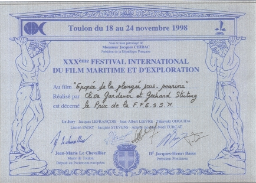
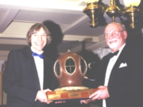

Awards, Reviews and Screenings
Awards received by the film include
|
 Federation Francaise d'Etudes et de Sports Sous-Marine AwardAwarded to the French version "L'epopee de la plongee sous-marine" at the ' 30th International Festival of Maritime and Exploration Film' at Toulon during 18th - 24th November 1998. The film was chosen from among 150 entries to receive this award. |
The Reg Vallintine Award for Historical Diving Achievement  Clive Gardener writes of receiving this award...The Reg Vallintine Award for Historical Diving Achievement represents the effort in co-ordinating the contributions from many people, without whom DIVING From the Past - Into the Future could not have been made, and the craft skills learnt through a life of working in the film and television industry. Therefore, it should not be forgotten that Michael Cocks gave me an introduction to the Society through our mutual interest in things Egyptian and things subterranean - flooded and otherwise! The major historical/creative inputs from Nick Baker, John Bevan, Brian Cooper, Iain Middlebrook, Rob Palmer and Reg Vallintine, along with the underwater camerawork of Rob Parker and Jerry Cross should stand tall in the credit list for the award. Kevin and Hazel Casey made the visual referencing for events pre-film cameras a practical possibility with their extensive historical diving print collection. I would also like to thank Mike Ash and Terry Bannon through whose music the story has been so much fun to compile and Guy Morley who kept finding time to edit 'just one more sequence'... |
| "Excellently researched and edited, the video includes extremely rare archive film" | |
| Dive International | |
| "Diving From the Past is as informative as it is visually attractive. It is a must for every true enthusiast of the underwater world." | |
| Historical Diving Society | |
| "This video and its companion are unusual; it isn't every day that diving
history is dealt with in such detail and to such a standard." "It isn't only concerned with diving history, it is also a story of exploration and overcoming challenges" |
|
| Descent | |
| "Some of the older footage which has survived surprisingly well is quite
amazing and fascinating. How these men survived is a mystery, but they did... ...In all, this is an excellent look at the early years of diving and a real source of information for all divers and interested enthusiasts." |
|
| Sport Diver |
| Royal Naval and Royal Albert Yacht Club - Historical Diving Society, Portsmouth. Premiere Screening Part 1. | Nov '95 |
| DIVE '96 - International Sub-Aqua and Watersports Show. Premiere Screening Part 2. | Oct '96 |
| Society for Underwater Technology AGM - Special Review Screening of Part 2 onboard HQS Wellington | Dec '97 |
| 9th Festival de Plongee Souterraine d'Ile-de-France - Cave diving sequences screened in Paris. | Dec '97 |
| ARTE satellite channel 49 - A 58 minute compilation in both German and French, broadcast across mainland Europe. | Apr '98 |
| NDR (German public television) - A 45 minute German version broadcast across Germany on terrestrial television. | Sept '98 |
| International Maritime & Exploration Film Festival - Held in Toulon, the ARTE 58 minute French version was shown and won the F.F.E.S.S.M. Award. | Nov '98 |
| Historical Diving Society Annual Conference - Producer/Director Clive Gardener received the Reg Vallintine Award for Historical Diving Achievement with the production. | Nov '98 |
| 7th Jules Verne Film Festival - Held in Paris, the ARTE 58 minute French version was nominated and screened. | Nov '98 |
© The
Secret Bottletop Production
Company Limited 8 January, 2001
Web Pages by Stone
Cottage Industries